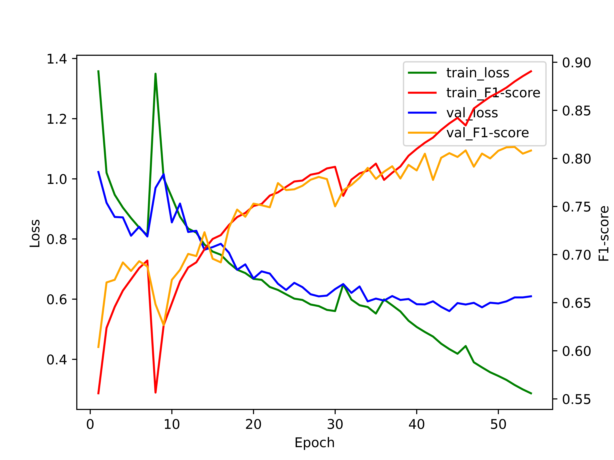

Multi-class Remote Sensing Image Semantic Segmentation with Graph-based Learning Metho
Figure 1: Phases for the methodology of research; Phase 1: Data preprocessing invloves raw images converted into smaller patches; Phase 2: Clustering in which k is number of clusters and this clusters are used for feature extraction and graph generation; Phase 3: Model development, model trainingm, generate prediction and evalution
Abstract
Geo-spatial image segmentation is one of the most essential aspects of computer vision to analyze the objects in an image. It also applies to very high-resolution (VHR) imagery obtained from satellites to work on various research topics for many applications, including land-use classification, urban planning, and environmental monitoring. This research introduces the fundamentals of remote sensing images or satellite images and image segmentation with them. Followed by, understanding the requirement of deep learning (DL) for this application and reviewing existing literature which demonstrates work done in the field using graph neural networks (GNN) and other advanced architectures like the graph attention network (GAT), the self-constructing graph neural network (SCG-NN), and the graph u-net. This paper proposes a graph-based deep learning-based approach for geo-spatial image segmentation using GAT with multiple heads and channel-based feature extraction. A state-of-the-art DL architecture for graph-based image segmentation incorporates an attention layer to enhance the model's ability to focus on essential features and regions in the image. The analysis of results reveals that the proposed model achieved an F1 score of 80.80 on the Potsdam dataset, whereas the state-of-the-art model achieved an F1 score of 92.7 on same dataset. It's important to note, though, that there's still room for improvement in terms of results.
Phase 1
Potsdam satellite images or tiles are 6000 x 6000 in dimension, and a total of 38 images are utilized. From these large dimension images, multiple patches of 512 x 512 dimension are created. These resulting images are then split into training, testing, and validation sets, with 19 images used for training, 4 images used for validation, and 15 images used for testing. Annotations of the label are provided which are also changed into patches similar to the input image size.
Phase 2
SLIC is a clustering algorithm commonly used for this type of research problem. The basic idea of SLIC is to group up pixels in an image based on their spatial proximity and color similarity. This is achieved by defining a set of "superpixels", which are compact, roughly equally sized regions of the image that contain similar colors. Each pixel in the image is then assigned to its nearest superpixel based on both its color and spatial proximity to the superpixel.
After clustering, necessary features need to be retrieved from the cluster, for that, histogram method is used. From the RGB image, different number of quantile bins are defined for the histogram, which determines the granularity of the color information that will be captured. A larger number of bins will capture more detailed color information. For each cluster, count the number of pixels that belong to each color bin. This can be done by looping over all the pixels in the cluster and incrementing the corresponding bin in the histogram for each pixel. To account for the fact that different clusters may have different sizes, the histogram should be normalized so that it represents a probability distribution. This can be done by dividing each bin count by the total number of pixels in the cluster.
From the resulting color histogram, some of the quantiles are selected as the features extracted for that cluster. For our experiment, 5th, 25th, 50th, 75th and 95th quantiles are used. Using these, graphs have been generated and further will be used for model development.
The cluster formed in the feature extraction are represented as nodes, and each can be labeled according to the cluster ID, The edges between nodes represent the similarity between the corresponding color histograms. One common approach is to use a distance metric, to measure the distance between the nodes. We are considering 5 neighboring nodes to form a cluster. The edges can then be weighted, for our case, we are considering same weight for each edge. Each node is represented as N which consists of a set of id, features, label, where id is the unique identifier for each node, features are extracted using a quantile-based approach as mentioned earlier, and label refers to the class the node belongs to.
Once the nodes N and edges E have been defined, they can be used to construct the graph. This can be done using a deep graph library and it is represented as G(N, E) which consists of information of nodes N, edges E and metadata type of graph (direction or undirection) etc.
Phase 3
The main idea behind GAT is to compute a node embedding by aggregating the embeddings of its neighboring nodes. The aggregation process is performed using an attention mechanism, which assigns weights to each neighboring node based on its relevance to the current node. The score is then normalized using the softmax function, and the normalized scores are used as weights for the aggregation operation.
From the graph generation, we have specified quantiles of 5%, 25%, 50%, 75%, 95% and input image with 3 color channels, we have 15 input features per node, as we have specified 2000 cluster to be formed using SLIC and compactness set as 0.1, the learning rate is initially set to 0.0001, weight decay is 0.0001 and learning rate decay is 0.98.
The number of layers used is 10 with neurons in layers are [512, 512, 256, 256, 128, 128, 64, 64, 32, 32] and along with each layer having 6 attention layers that are concatenated with graph convolutional layers, each layer is connected with the exponential linear unit. To train the model, each layer is connected with elu activation function and the last layer has softmax which provides the final prediction output.
This model is set for 200 epochs, but to avoid overfitting, early stopping is implemented on validation loss with the patience parameter set at 10, hence, model exit training at 35-40 epochs. The model takes approximately 14-15 hours to completely train and gives a prediction on the testing set with a total trainable parameter of 19040274. All the experiments were conducted on narval cluster of Compute Canada

The research results were produced by reproducing the distribution of the dataset for training, validation, and testing, out of 38 tiles, 19 tiles were used for training, 4 tiles were used for testing and 15 tiles were used for validation, the ratio of splitting tiles was followed with reference to \cite{Diao2022SuperpixelBasedAG}, while other parameters were determined by experimental results and different model configuration and comparing among them.
Here, the results are compared between the state-of-the-art models and the current research models. \cite{He2021RSINetTD} achieved an average F1 score of 91.49\% while using a fusion of GCN and CNN for feature extraction at different encoder and decoder levels, with different results based on different parameters. \cite{Diao2022SuperpixelBasedAG} has a mean F1 score of 92.01\% on the Potsdam dataset, where CNN and GCN are used in a linear architecture unlike the previous model as it also improves results. Using the SCG-NN with attention head to obtain an F1 Score of 92.7\%, this approach for the existing model is different than what is proposed in this paper \cite{Zi2021SGANetSG}.
In this research, we have used a new mechanism with the use of a multi-attention head, which is not been used by any other existing models on the Potsdam benchmark dataset. While using 2 different models, one with a U architecture of connection between pooling and unpooling layer with a depth network. Another is with a traditional GCN, without and CNN prior connection to the model as compared to existing work, with multi-attention heads with different series of layers to get the optimal solution.

This analysis consists of a visual study of test results from the trained model. From the partition of the dataset for the testing model, 24 patches are selected, and for each patch, the actual RGB image, ground truth, and prediction are shown in Fig. \ref{fig:quantitative}. Upon close inspection of the images, prediction images have issues with the distortion of the labels observed around the edges of the label. While imaging 2\_10\_RGB\_93 overlap of the background and tree is predicted where as per ground truth, also in the predicted image there is a fine classification for low vegetation, whereas the growth truth has labeled the whole region as low vegetation. Upon further inspection, the majority of mislabeling occurred between the low vegetation and trees, trees, and background./span>